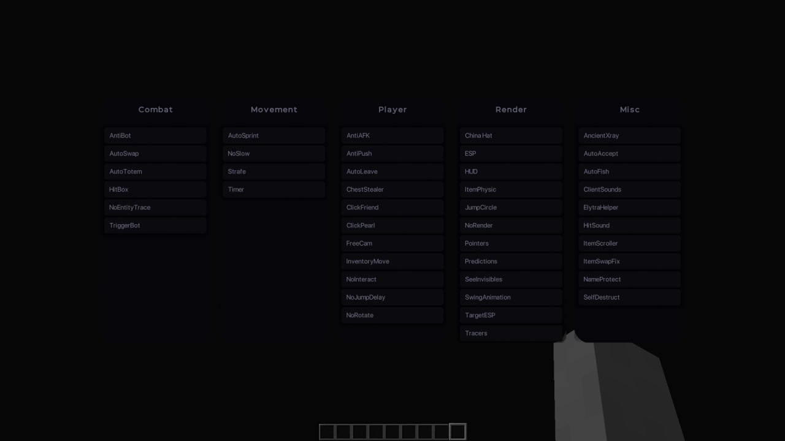

Мощный чит для Minecraft
Получи абсолютное преимущество в игре с XainClient
Скачать клиент

Наши преимущества
Обходы
Уникальные обходы дают возможность побеждать игроков
Персонализация
Большое количество тем и настроек позволяют настроить клиент именно под себя
Оптимизация
Встроенный Optifine и дополнительные улучшения помогают увеличить FPS
Поддержка
Отзывчивая поддержка поможет в случае проблем
Безопасность
Полная защита от банов и обнаружения
Обновления
Регулярные обновления для всех версий Minecraft